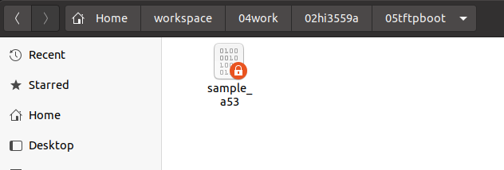
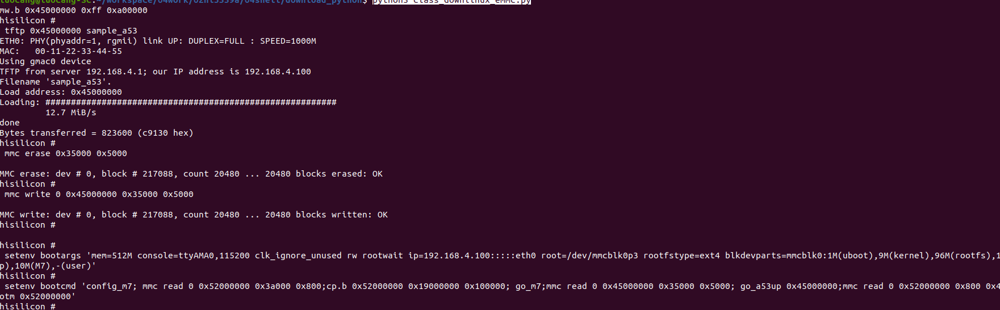
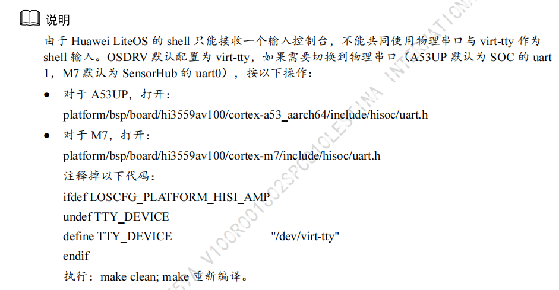
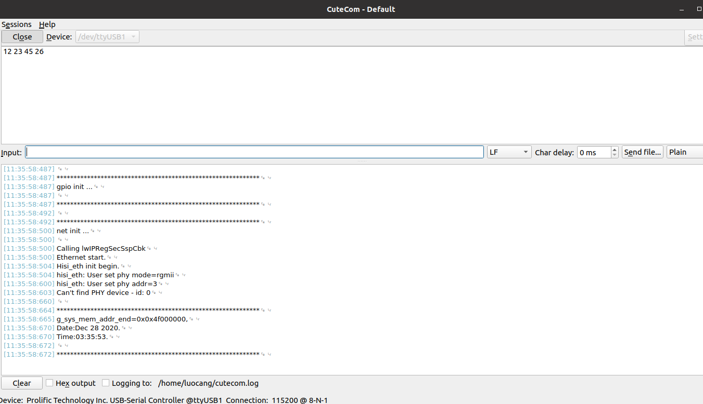

Hi3559a_开发(三)-A53调试：helloworld
芯片的大核心采用linux系统，其异构方式为multicore。multicore默认是不启动liteos的，考虑到后期的具体应用，在multicore的前提上启动liteos，其中a53up的工程位于osdrv/platform/liteos_a53/liteos中(osdrv/platform/liteos_a53/liteos_user有问题)。
一、加载驱动
linux与liteos之间采用ipcm进行核间通信，测试通linux与liteos之间的核间通信便知道liteos已经正常启动。需要先设置网卡的ip地址。
# 在主机
sudo ifconfig enp4s0 192.168.4.1
插入串口线，插入网线，启动板卡进入linux系统，网卡灯正常闪烁，表示网络初始化正常。串口登录进linux系统，搭建nfs平台。
mkdir /home/00shell
cd /home/00shell
vi nfs.sh
#添加
#!/bin/sh
mount -t nfs -o nolock 192.168.4.1:/home/luocang/workspace /mnt # 根据个人目录设置
#end
chmod +x nfs.sh
./nfs.sh
插入ipcm的驱动。
mkdir /home/01ko
cd /home/01ko
cp /mnt/04work/02hi3559a/02sdk/Hi3559AV100R001C02SPC020/01.software/board/Hi3559AV100_SDK_V2.0.2.0/osdrv/components/ipcm/ipcm/out/node_0/* ./
vi /etc/profile
# 添加
insmod /home/01ko/hi_ipcm.ko
insmod /home/01ko/hi_virt-tty.ko
# end
reboot
lsmod
二、A53UP烧写程序
在docker中运行应用程序的开发，因此需要主机跟docker容器共享tftpd根目录，在a53up的应用程序中添加如下代码，将生成的bin复制到tftpd服务器下：
# 在docker容器a53up的makefie中
cp sample.bin /workspace/05tftpboot/sample_a53
编译成功后便会在在tftp根目录下生成一个sample_a53的文件 
烧写程序可以采用之前提供的脚本进行程序烧写，但是此时仅需要更新用户程序，不烧写系统，因此需要稍做配置
IS_Biglittle = False
WRITE_SYSTEM = False
WRITE_M7_FG = False
WRITE_A53UP_FG = True
然后串口控制台进入uboot，然后退出minicom，运行该脚本。
reboot
# 进入uboot，然后退出minicom
cd ~/workspace/04work/02hi3559a/04shell/download_python/
python3 class_downlinux_emmc.py
运行后的结果如下所示： 
然后登录minicom进入系统，reset重启系统登录linux，如果能够成功用virt-tty登录a53，说明A53UP已经成功启动并且与linux成功进行核间通信。
reset
virt-tty a53
三、A53UP临时烧写
用上述方式烧写a53up的时候比较麻烦，还需要重启芯片，在调试的时候比较麻烦，这里介绍一种新的方式来调试该芯片，将程序临时运行在DDR中，等调试完毕后可以用上述方式烧写。其原理是在主机中一直运行该部分代码，程序一直监控sample_a53是否有变化，一旦有变化，便启动烧录程序。
#-*- encoding=utf8 -*-
import time
import serial
import os,sys,shutil
from create_download import *
# 这里是我的路径
mfile = '/home/luocang/workspace/04work/02hi3559a/05tftpboot/sample_a53'
if_first = True
o_time = 0
def get_diff(file):
global if_first
global o_time
if os.path.isfile(file):
if(if_first == True):
o_time = c_time = time.ctime(os.path.getatime(file));
if_first = False
c_time = time.ctime(os.path.getatime(file))
if(c_time != o_time):
o_time = c_time
return True
return False
def debug_a53up():
if(get_diff(mfile)):
print("start download!")
ser=serial.Serial('/dev/ttyUSB0',115200,timeout=0.5)
emmc_test = class_downlinux_emmc(512)
emmc_test.reset(ser)
emmc_test.debug_a53(10)
emmc_test.write_list(ser)
ser.close()
print("end download!")
def main():
while True:
time.sleep(1)
debug_a53up()
if __name__ == "__main__":
main()
在主机里运行该程序，当docker中执行make生成bin的时候，该程序会将bin自动烧写到DDR中，并运行A53UP。
四、调试串口
系统默认提供virt-tty用来调试，但是该部分串口调试不太方便，可以设置串口1用于调试。 
经过调试后，发现已经能够通过串口1打印输出了。
